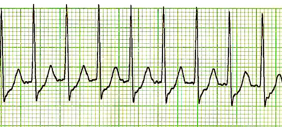
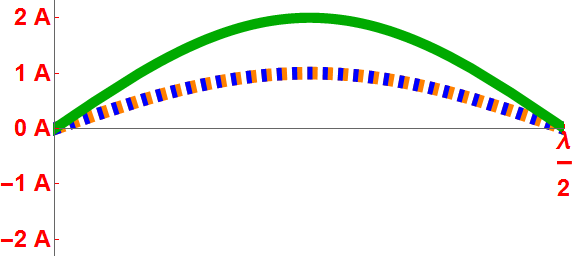
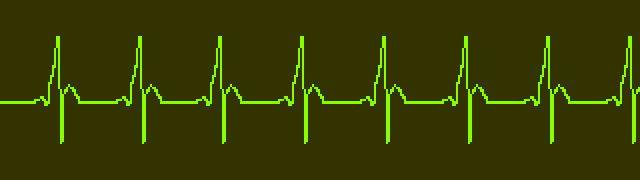

.gif)
Introduction
A common problem faced in the medical field when in emergency situations is trying to balance accuracy with time, in most cases this is something that is commonly ever only compromised on, with either time or accuracy being sacrificed. The topic then, for this project, was the measurement of cardiac signals in the medical field, specifically with how it’s done and the tools used to do it, as well as the tradeoffs the methods used have.
The project ended up centering around two major methods of cardiac signal processing and display, with the two methods being the Fast Fourier Transform (FFT) and the Short Time Fourier Transform (STFT). There was also a more experimental method that we had originally attempted to tackle, but it will not be talked about here as the next section is dedicated to it. Besides those, the final aspect of the project is an Arrythmia detection code, which will also be further elaborated on in the following sections.
.gif)
Scope
When discussing the Scope of the project, its important to know what exactly the circumstances around it are, in the case of our project, we initially had a far more ambitious scope, with a larger focus on making a signal processing method that was better than the FFT and STFT. This however, due to the pandemic and other factors resulting from it, have resulted in us dialing back our scope far more, making it so that the Faster-Than-Fast Fourier Transform will stay only as a theoretical discussion and not an actual implementation. Additionally, the Arrhythmia detection code has been stripped back greatly to only function as one-time piece of code, making it so that signals can’t be interchanged with it. In addition to this, it should be noted that we obtained all of our data from a database from the American Heart Association.

Fast Fourier Transform
The first of the signal processing methods used in processing and understanding a cardiac signal is the fast Fourier transform. This method is typically considered the slower of the two methods that will be presented, but is also the method used more often in actual hospitals for bulkier machines, as not only is the signal that it produces far more accurate, but it’s also much better for understanding the resulting signal on an ECG machine.
The FFT then, is defined as an algorithm that computes the discrete Fourier transform (DFT) of a sequence, or its inverse (IDFT) – mathematically following as such:

where e^(i2pi/N) is a primitive Nth root of 1.
This mathematical definition has as such, been used to help us in creating code for the actual project, following as such:

This code, results in the following signal:

Without context however, you’ll note that this signal doesn’t have much meaning, and because of that, it may as well be useless unless compared to signal that we know has been correctly processed or more so a signal that we know is correct – which of course leads us to the next picture, a diagram of what a normal cardiogram should look like:

Upon looking at both of the given signals, and after that brief explanation on what they are, as well as what to look for in cardiograms, one can easily see that the two signals look extremely similar, with the major landmarks still existing within the signal. The only problem then, really comes down to the noise, which could perhaps even be from the measurement originally.
Short Time Fourier Transform
The second method by which cardiac signals are measured and processed in the medical field is what we will refer to as the short time Fourier transform method. The key features of this method come down to the fact that it takes far less time than the FFT, ranging anywhere from 20-25 seconds faster, for this reason its commonly found on the field in mobile ECG devices, as it can quickly pump out an ECG. The problem however, comes in the accuracy, as unlike the FFT, the STFT is meant for seeing the signal and making a quick decision about a patient when there’s not enough time to slowly find out, this also ends up effected how well this method functions overall, thought its use still remains.
The Short-time Fourier transform (STFT), is a Fourier-related transform used to determine the sinusoidal frequency and phase content of local sections of a signal as it changes over time, it looks as such mathematically

where where w(t) and x(t) is the signal to be transformed.
Based off of this mathematical definition, the implentation of this in code would look as such:


The resulting plot from this code is as follows:

This signal then, when compared to the correct or more normal signal that was shown earlier, appears far fuzzier and more difficult to read, this however is the previously mentioned trade-off from earlier, as it takes less time and appears to be the same signal that we saw earlier – just far noisier than the FFT. That said, this is definitely a successful implementation.
Arrythmia Detection
When approaching the detection of heart diseases such as Arrythmia from electro cardiograms, it would first be important to cover what exactly Arrhythmia is and what the methodologies around it are when it comes to detection.
Arrythmia comes in two major forms, Tachychardia and Brachycardia, in short tachycardia is a increase in the heart rate, or in other words an increase in its frequency, while brachychardia is the exact opposite of that, wherein the frequency of the cardiac signal is much lower than the norm - an example of tachychardia can be seen below:
This then, when translated to a piece of code that would measure to see if a signal has Arrythmia simply needs to scale the signals to a point where it can it can accurately measure their frequency when compared to a predefined normal cardiac signal:


Plugging in a cardiac signal into this code will either give the user the tachychardia output, the brachychardia one or a null output. The outputs themselves will be simple statements as to what the disease is, and not much else, this is partially due to the limitations of this fairly static method of obtaining a diagnosis, but does allow for a fair bit of accuracy all things aside.
Faster-Than-Fast Fourier Transform
The faster than fast foruier transform is an implementation of the FFT that attempts to make it faster in the time domain via the use of algorithmic reconstruction techniques that involve predicitve ai and neural networks. The problem with this however, comes with our attempts in reseaching it, turns out that physcial implementation of the faster than fast fourier transform is so confidential and proporeitary right now, that most work on it is only in the showcase portion of its life, being shown as a tech demo more than a physical implementation.
Conclusion
Overall, we have found quite a few things about the use of these techniques in measuring cardiac signals, firstly in that the methods in actual practice are far noisier than initially intended – at the same time they also tend to have more issues with clarity than initially thought. Besides that however, the images resolved are far better than expected in terms of the fact that they even worked, and on top of that it appears that the time difference between FFT and STFT is not even all that large, though it definitely maybe be the difference between life and death. As for detecting disease, the code works fairly well, though it does have the downfall in that its not all that accurate and is quite static.
